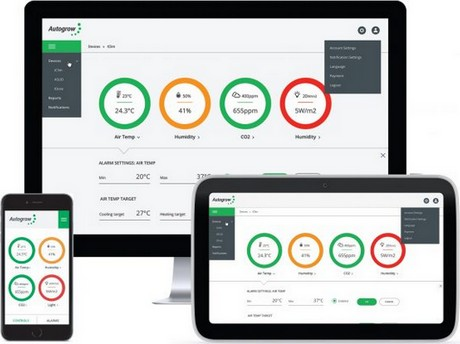

Avec l'augmentation des besoins de production alimentaire et la diminution des surfaces dédiées à l'agriculture de plein air, l'importance de l'agriculture "intérieure" va augmenter. Celle-ci rassemble diverses pratiques comme les cultures en milieu contrôlé, les serres, les fermes urbaines, les fermes verticales, voire l'aéroponie et l'aquaponie.
Les technologies dans ce secteur sont avancées et vont toujours plus loin, toujours plus vite.
L'entreprise dont nous allons parler, Autogrow, est un des leader mondiaux du contrôle et de l'automatisation en agriculture "intérieure".
Cette entreprise a tout d'abord attiré mon attention par sa façon d'utiliser les nouvelles technologies et l'informatique pour l'agriculture. J'ai donc proposé une rencontre à son dirigeant, qui a accepté.
C'est donc lors de mon séjour à Auckland que j'ai eu le plaisir de rencontrer Darryn Keiller (CEO) et Jeffrey Law (CTO) et leur équipe dans leurs nouveaux locaux. Ils m'ont présenté en détails les solutions qu'ils développent et leurs projets.
Autogrow est une entreprise spécialisée dans les systèmes automatisés pour l'agriculture "intérieure".
Son fondateur, qui avait une serre, souhaitait qu'elle soit irriguée même lorsqu'il n'était pas là.
Fondée en 1994, l'entreprise est aujourd'hui présente dans 40 pays à travers le monde. Elle fournit à la fois le matériel, le logiciel et l'analyse des données aux agriculteurs.
Tout récemment, une solution cloud a vu le jour : IntelliGrow. Grâce à elle les utilisateurs peuvent accéder à leurs données et piloter les paramètres depuis n'importe quel ordinateur ou smartphone ayant accès à internet.
Les données en temps réel de capteurs externes peuvent être intégrées à l'API utilisée. Par ailleurs les paramètres qui peuvent être pilotés grâce au boîtier nommé IntelliDose sont :
Cette visite m'a donc permis de découvrir une entreprise :
Dans un prochain article je vous parlerai d'un logiciel d'irrigation de précision fait à Wellington,
A très vite !